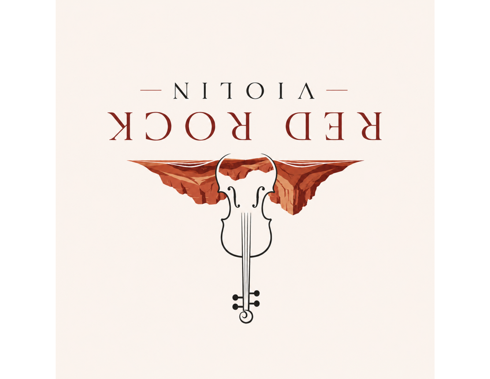
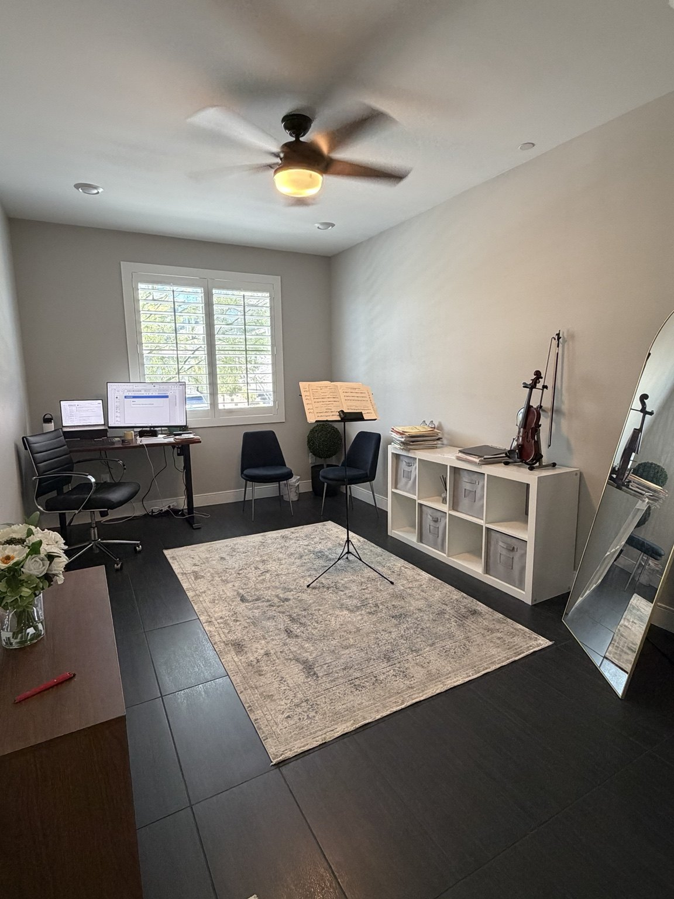

Studio lessons
Weekly private lessons at my home studio in Summerlin, designed to be focused, comfortable, and encouraging.

Private violin lessons · Summerlin, Las Vegas
Personalized violin instruction that builds technique, confidence, creativity, and a lifelong connection to music.

About Red Rock Violin
I believe violin lessons should develop more than musical skill. Students grow through clear technique, thoughtful encouragement, creativity, and music that keeps them engaged.
My background combines Suzuki training and a Bachelor of Music from NYU with years of professional acoustic and electric violin performance, including national touring. That mix brings both structure and real-world musicianship into every lesson.
Lessons
Beginner to intermediate students are welcome. Lessons are tailored to each student's goals, pace, and personality.
Weekly private lessons at my home studio in Summerlin, designed to be focused, comfortable, and encouraging.
Limited in-home availability in select nearby areas for families who prefer lessons at home.
Technique, tone, reading, repertoire, and musicianship are adapted to the student—not the other way around.
“A strong classical foundation should give students more freedom—not less.”
Red Rock Violin teaching philosophyThe studio
Lessons take place in a private Summerlin home studio with room to move, a full-length mirror for posture work, music stands, and a relaxed setting that feels different from a busy classroom.
Exact studio address is shared directly with enrolled families and scheduled introductory lessons.
Good to know
I welcome students ages 4 through adult, with a focus on beginner and intermediate players.
My teaching is Suzuki-trained and classically grounded, but lessons are personalized rather than locked into a single method or book.
Yes. In-home lessons are available in a limited service area, subject to scheduling and a travel fee.
If you already have an instrument, bring it. If not, reach out first and I can help you understand what size and setup to look for.
Email me with the student's age, prior experience, and your general availability. We can start with an introductory lesson to make sure it's a good fit.
Get in touch
Tell me a little about the student, their experience, and what you're hoping to get from lessons.